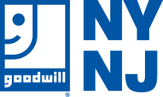

Creating a modern sustainable donation model
New York City is one of the most densely populated and wealthiest regions in the United States. Yet Goodwill’s penetration of the potential donor base is at best very shallow.
To increase our donor count by 100,000 by making it as convenient as possible to donate. To succeed, we particularly need to attract new supporters, including the next generation of donors.
Our initiatives are driven by convenience, the Shortest Path to Donation. We want Goodwill to be the first option that comes to mind when people think of donating and furthermore, to be the first available option there when it actually happens.